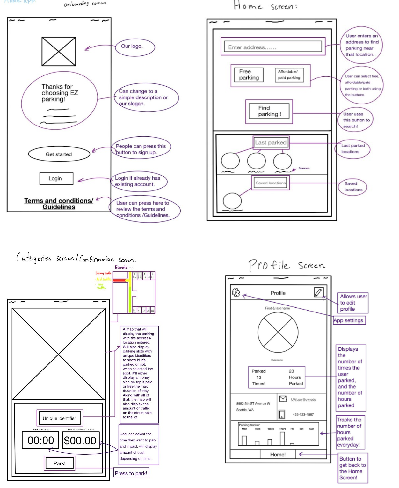
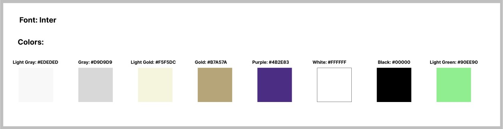

EZ PARK
Mobile App Design
We aim to serve UW and matriculated UW students who commute to campus everyday, or keep their vehicles/ bikes on campus, and make it easier for these students to find free and/or affordable parking located around their classrooms. Students should not have to worry about paying an excessive amount for parking.
My Role:
UI Design + User Research
Tools:
Figma, Google Docs, Moodboard
Problem
Expensive parking creates campus accessibility and transportation barriers, and financial burdens that stem from those barriers such as an extra barrier for education on top of tuition and housing for underprivileged students from low income households, international students who are paying more for tuition and receive no financial aid, and students from other colleges who are taking UW classes.
Solution
After doing in-depth research and ideating, we created a mobile app that will help students save money and decrease stress on parking. They could use the money to help support what they need for school like textbooks, tuition, supplies, and other technology needs. It can also lower stress for students when it comes to parking, students can then focus their time on things that are more important to them.
Research
We used research methods such as doing stakeholder interviews, and surveying the community. We did interviews with a student that commutes to campus, and also we interviewed UW staff on how they think about parking at the UW. Then we found that the student users' average time spent looking for parking is between 7 to 10 minutes. Based on the response, the user does not have a pleasant experience dealing withparking on campus, they expressed emotions like frustration and confusion. As for the UW staff, their response was that the parking has not only students affected by parking. Staff is also showing great concern. When we did the survey, we found that of the total number of 28 students, 64% spent between 5 to 15 minutes looking for parking. While 16% spend 3 to 5 minutes and 12% spend 30 or more minutes looking for parking. The link for the survey is: Parking Survey.
Moodboard
The main stakeholders was UW students and staff and we wanted to bring out the joy in accessible parking, so we bounced our ideas on the moodboard, playing with different themes.

User Personas
Our targeted direct stakeholders are UW students and staff who needs to drive to campus daily, and need a smooth transition from parking to working or studying.
Our indirect stakeholders would be people like transportation services who don't need to use the app everyday but would be useful to know the traffic around them, and better assist with transportation.


Site Map
We mapped out the important product features that can best benefit the users in our site map. This helped us structure and design each of the pages the users will encounter and increased the overall smoothness and functionality of the app.

Low Fidelity Prototype
Our Lo-fi was created as we inputted our research into design and structure. We wanted to make sure the user feels at ease with the information flow so we went for simplicity.

Style Guide
Some style guides were inputted to ensure consistency in our designs and aesthetics of our app. We choose school colors to represent the school spirit but also colors that are appealing to other users, and simple fonts to be easily legible.

Final Product
After extensive design sessions and feedback recieved from users with our lo-fi designs, here is our final product, EZ Park.